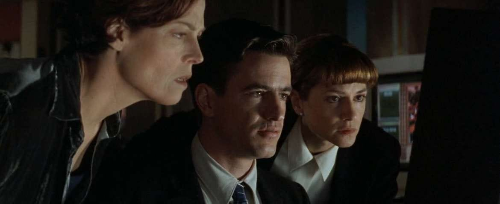

I rewatched Copycat movies because of Seth Godin


for learning and understanding genres and for these games that Godda Game is designing and building it was important to rediscover all those movies like copycat. Rewatching it two days ago reminded me why I loved this movie? Not the characters, neither the director nor the beauty of the film … but this computer that was playing like an actor. I remembered that during this time (1995) and years before computers were stars in Hollywood movies. Now who cares if a Macintosh or an IBM appears in Hollywood movies.
I sincerely rewatched copycat and I used the bad way for getting it, I hope what I will be doing with it will deserve all those who have worked hard to produce it and hope it will also benefit others because I believe in Seth Definition of Art
Art is a tool that gives us the ability to make things bette and to create something new on behalf of those who will use it to create the next thing
I did not only learn this genre, but I also learned really what the word copycat means and thought really that I was one.
I rewatched Copycat because I have learned from Seth the importance of genres which led me to rewatch all these genres of movies and I watched more and more than 10 of them since last week (07/07/2021)
Hope it highlights to you how deep at Emb.., Book Dojo, and Godda Game we do the work for chipping you data-driven books, book-driven platforms, and every kind of thing that matters to you but in this case, it is about games.
You are clever enough to know that this is a copycat article of the genre of articles that the Greyio Heart Experiment is set to publish and Seth Godin one of the cerebrities to whom we cared since we started the Tank you Article Experiment.
Watched all these movies' for creativity and originality, for being specific and peculiar not for chipping things as actors of copycat industrialism and capitalism does.
PS: this article is part of the Greyio Heart Experiment and this copycat movie is a BUDDY-COP movie. Learning genres is important and this can help the graphic designer I was talking about in the PS section of this article understand genres better.